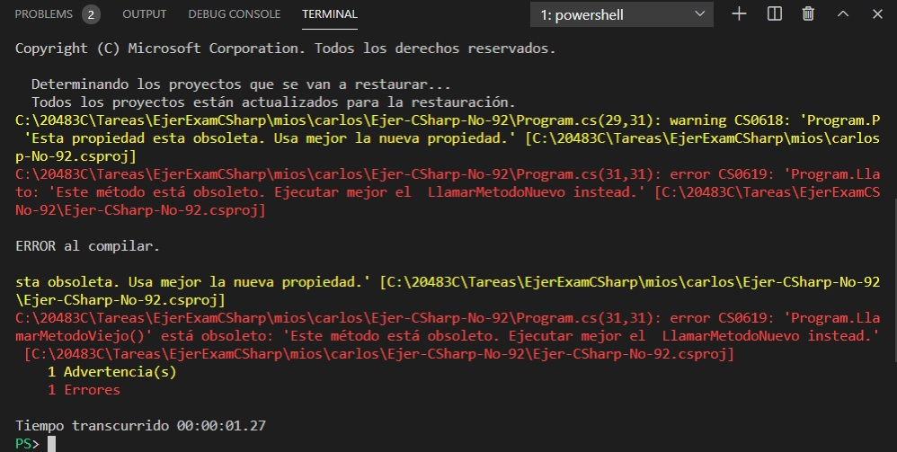

|
You have an assembly named Assembly1 that is written in C#. Assembly1 has a method named
Method1. You add a new method named Method2 to Assembly1. Method2 is a newer version of Method1 and must be used by applications in the future. You need to ensure that if a developer builds a project that uses Method1, the developer is notified that Method1 is deprecated. What should you do? A. Set an #if DEPRECATED preprocessor directive above Method1. Set a #endif preprocessor directive after Method1. B. Set a #pragma warning disable preprocessor inside of Method1. C. Mark Method1 with an ObsoleteAttribute attribute. D. Mark Method1 with a Conditional attribute that is set to WARNING. E. Set a #warning preprocessor directive inside of Method1. Correct Answer: C Section: Volume A Explanation Explanation/Reference: Explanation: ObsoleteAttribute is applicable to all program elements except assemblies, modules, parameters, and return values. Marking an element as obsolete informs users that the element will be removed in future versions of the product. Reference: https://docs.microsoft.com/en-us/dotnet/api/system.obsoleteattribute?view=netframework-4.7.2 ExplicaciónObsoleteAttribute es un atributo aplicable a todos los elementos del programa, excepto ensamblados,
módulos, parámetros y retorno. Respuesta:La Respuesta correcta es la opción C que es dada en el ejercicio. Cuando se ejecuta el programa nos da un error y un warning que es lo que se muestra a continuación:
Determinando los proyectos que se van a restaurar... Mostrando de manera visual la respuesta:Fuentes: |